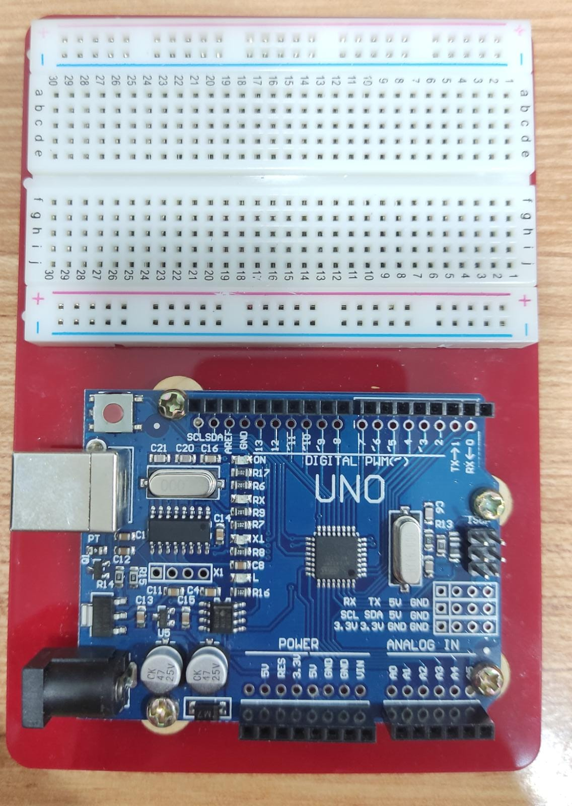
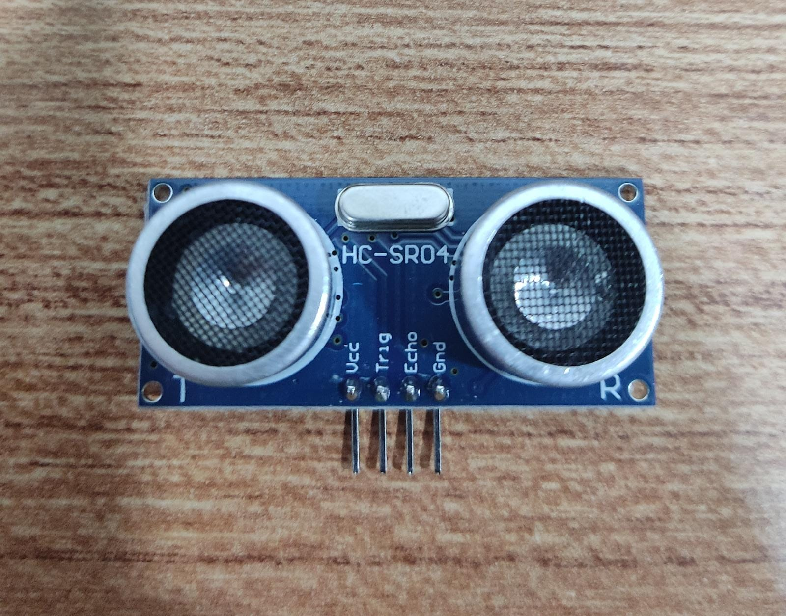
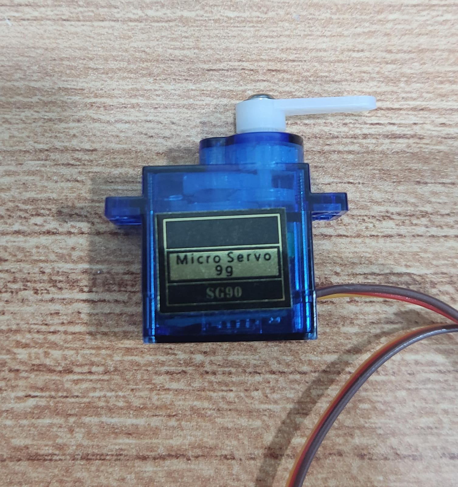
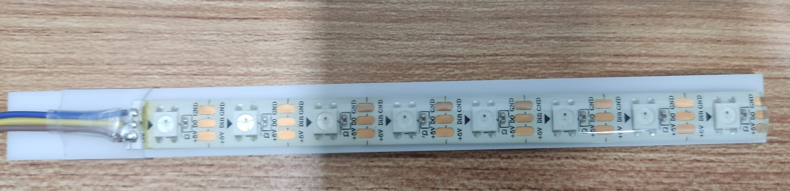
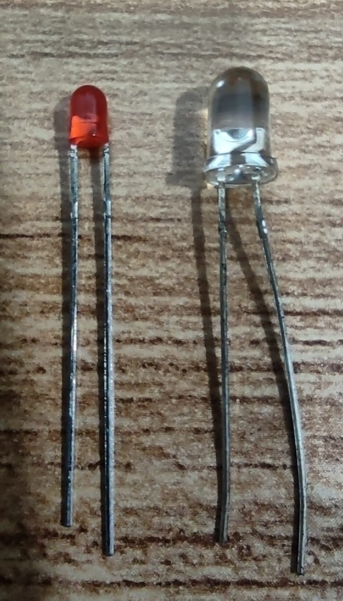
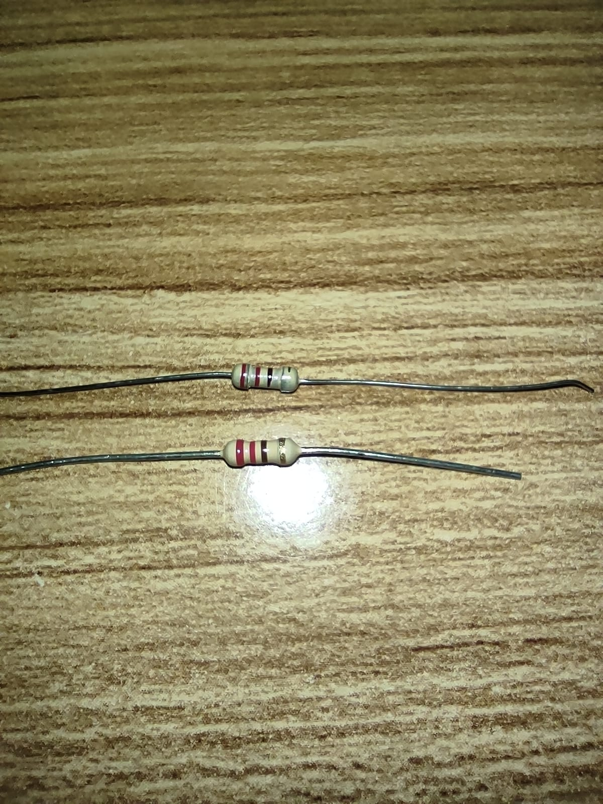
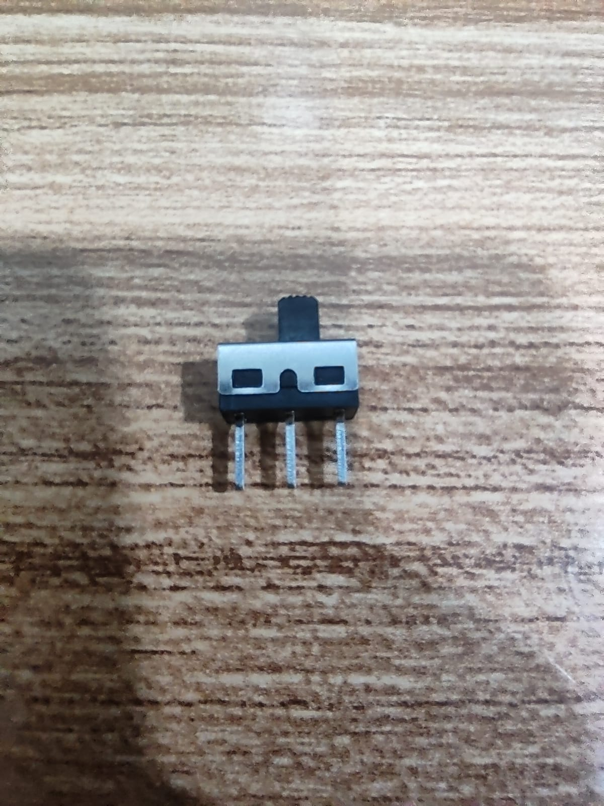

Final Project Idea:
My final project is a Trash-Bot, that would open and close automatically, with the help ultrasonic sensors acting as a input device and a servo motor acting as a output device.
The ultrasonic sensor would sense when there is a hand near the sensor, and send a signal for the servo to turn and open the box.
My target audience is the people who want a hands-free box opening experience.
This projects takes inspiration from the Arduino Project Hub .
My project is slightly different, as it uses laser cut plywood to create box, has a 3D-printed holder for the ultrasonic sensor, and improves on the overall cleanliness of the design.
Project Sketch:
insert rough sketch here + explain; do later
Idea on 3D Software (Inventor/Fusion360):
I quickly did a sketch of what it would look like. Keep in mind that this is the first draft, and some parts that have been 3D modelled may or may not be used in the final product. This also allows me to get an idea of what parts i would need.
Parts needed (Bill Of Materials):
| Part | Quantity | Remarks/Photos |
|---|---|---|
| Arduino Nano | 1 |  |
| Ultrasonic Sensor (HC-SR04) |
1 |  |
| Mini Servo Motor (SG90) |
1 |  |
| LED Strip (not used) |
1 |  |
| LEDs | 1 |  |
| Resistors | 2x 220Ω |  |
| SPDT Switch (On/Off Button) maybe no need |
1 |  |
| Wires |  |
|
| Breadboard? | 1 |  |
3D Print(s):
Using the above dimensions as a reference, i modelled a holder for the ultrasonic sensor in Fusion360.
This would be mounted at the bottom, facing upwards.
The user would then be able to wave their hand over the sensor and open it hands-free.
The bottom is left open for easy mounting and troubleshooting (if needed). There is additonal material behind the slope to hide the wires.
Laser Cut (2D Cutting/Engraving):
Using Fusion360, I was able to make a parametric finger-jointed box with a hinged lid, and a compartment for the Arduino and relevant eletronics to be stored.
I referred to the video tutorial (below)to help me create the rounded edges.
show parameters.
show .dxf files?
Arduino:
Assembly:
show expected outcome in fusion
show step by step assembly, talk about probelems?
Showcase:
show 1 min video + 1920*1080 single page “cover sheet” here
embed video link
Problems that occured & possible limitations
show problems, what could have been done better
| Problem faced | Photo | Remarks |
|---|---|---|
| (insert problem here) | |
This was done to prevent (this) from happening, but (this) happened. |
Possible solutions
With reference to the problems mentioned above, these problems can be solved by ________.